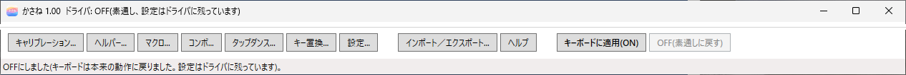
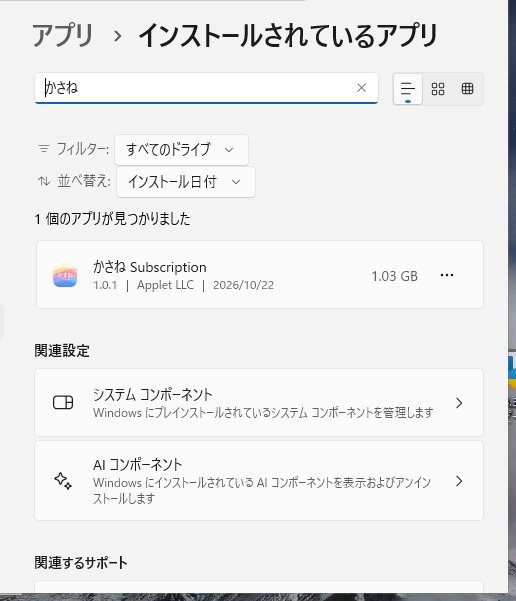
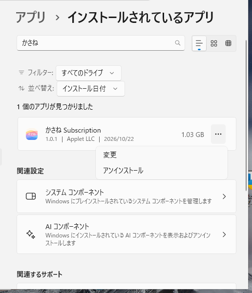
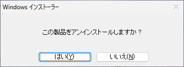

<!doctype html>
<html lang="ja">
<head>
<meta charset="utf-8">
<meta name="viewport" content="width=device-width, initial-scale=1">
<title>2. アンインストール - かさね ヘルプ</title>
<link rel="stylesheet" href="../assets/style.css">
</head>
<body>
<div class="layout">
<nav class="toc">
<a class="brand" href="index.html">かさね ヘルプ</a>
<ol>
<li><a href="index.html">はじめに</a></li>
<li><a href="01-install.html">1. インストール</a></li>
<li class="current"><a href="02-uninstall.html">2. アンインストール</a></li>
<li><a href="03-license.html">3. ライセンスの認証</a></li>
<li><a href="04-tray.html">4. トレイ</a></li>
<li><a href="05-editor-basics.html">5. エディタの基本画面</a></li>
<li><a href="06-calibration.html">6. キャリブレーション</a></li>
<li><a href="07-emergency.html">7. 緊急解除</a></li>
<li><a href="08-key-assign.html">8. キーの割り当て</a></li>
<li><a href="09-advanced.html">9. マクロ・コンボ・タップダンス・キー置換</a></li>
<li><a href="10-ime-nicola.html">10. IME連動とNICOLA</a></li>
<li><a href="11-helper-apprules.html">11. ヘルパー動作とアプリ別レイヤー</a></li>
<li><a href="12-recipes.html">12. 設定の例</a></li>
<li><a href="13-settings.html">13. 設定ダイアログ</a></li>
<li><a href="14-import-export.html">14. インポート／エクスポート</a></li>
<li><a href="15-backup-migrate.html">15. バックアップと移行</a></li>
<li><a href="16-reference.html">16. トラブル対応、既知の制限など</a></li>
<li><a href="17-keymaptool.html">17. KeymapTool とサンプル</a></li>
<li><a href="18-readme.html">18. README、来歴</a></li>
<li><a href="19-terms.html">19. 使用許諾</a></li>
<li><a href="20-third-party.html">20. サードパーティノーティス</a></li>
</ol>

</nav>
<main>
<div class="pagehead">かさね1.02 2026-11-16&nbsp;&nbsp;&nbsp;&nbsp;&nbsp;&nbsp;Copyright 2026 Applet LLC <a href="https://appletllc.com/">https://appletllc.com/</a> <a href="mailto:appletllc@gmail.com">appletllc@gmail.com</a> <a href="../en/02-uninstall.html">English</a></div>
<h1 id="section">2. アンインストール</h1>
<p>kasane をパソコンから取り除く手順です。ドライバはキーボードで使用中のため、完全に削除されるのは再起動した時点です。</p>
<p>新しい版を入れ直すだけなら、アンインストールは要りません（<a href="01-install.html">1. インストール</a>の「上書きインストール」）。Subscription 版から Pro 版へ移るときは、アンインストールが要ります（<a href="01-install.html">1. インストール</a>の「Subscription 版から Pro 版へ移る」）。</p>
<h2 id="section-1">手順</h2>
<h3 id="off">1. リマップを OFF にする</h3>
<p>kasane（エディタ）を開き、<strong>OFF</strong> を押します。キーボードのリマップが止まり、キーが元の配置に戻ります。</p>
<p></p>
<p>この手順を省くと、再起動するまでのあいだ、ドライバが動いたままになることがあります。手順 1 で OFF にしておけば、割り当ては効きません。</p>
<h3 id="section-2">2. アプリと機能から削除する</h3>
<p>Windows の設定の「アプリと機能」（「インストールされているアプリ」）で、「かさね Subscription」（Pro 版は「かさね Pro」）を探します。検索欄に「かさね」と入れると絞り込めます。右端の <strong>…</strong> を押すと、<strong>変更</strong> と <strong>アンインストール</strong> が出ます。<strong>アンインストール</strong> を選んでください。管理者の権限が必要です。</p>
<p></p>
<p></p>
<p>確認の画面が出たら、<strong>はい</strong> を押します。</p>
<p></p>
<h4 id="section-3">使用中のファイルの画面</h4>
<p>トレイが動いていると、「インストールを続行するには、次のアプリケーションを終了する必要があります」という画面が出ます。一覧には、<code>kasane-tray</code> が出ます。</p>
<ul>
<li><strong>セットアップの完了後、アプリケーションを自動的に終了して、再起動する</strong>: アンインストールのあとで、パソコンが自動で再起動します。</li>
<li><strong>アプリケーションを終了しない (再起動が必要になる場合があります)</strong>: 再起動は、自分で行います。</li>
</ul>
<p>どちらを選んでも、アンインストールは完了します。手順 3 の再起動は、どちらでも要ります。</p>
<h3 id="section-4">3. 再起動する</h3>
<p>パソコンを再起動します。再起動した時点で、ドライバの削除が完了します。</p>
<h2 id="section-5">削除されるもの</h2>
<table>
<thead>
<tr>
<th>項目</th>
<th>内容</th>
</tr>
</thead>
<tbody>
<tr>
<td>プログラム</td>
<td><code>C:\Program Files\applet\kasane</code> の中身と、スタートメニューの項目</td>
</tr>
<tr>
<td>ライセンス管理サービス</td>
<td><code>kasaneLicenseSvc</code>（Subscription 版のみ）</td>
</tr>
<tr>
<td>ドライバ</td>
<td><code>kbdlayer</code> と、ドライバに保存されていた設定（キーマップ、マクロ、コンボ、タイミング、NICOLA、緊急解除の組み合わせなど）</td>
</tr>
<tr>
<td>環境変数</td>
<td><code>KASANE</code>（インストーラーで指定していた場合）</td>
</tr>
<tr>
<td>自動起動</td>
<td>トレイの自動起動の登録（Run キー）。管理者保護を使っているときは、タスクスケジューラのタスク <code>kasane-tray-&lt;ユーザー名&gt;</code> も</td>
</tr>
</tbody>
</table>
<p>i8042prt の設定は、設定フォルダではなくドライバに保存されるので、アンインストールで消えます。残したいときは、アンインストールの前に、<strong>復旧用の設定も含める</strong> を選んで全体一括をエクスポートしてください（<a href="14-import-export.html">14. インポート／エクスポート</a>）。</p>
<h2 id="section-6">削除されずに残るもの</h2>
<p>再インストールしたときに引き継ぐため、次のものは残ります。</p>
<table>
<thead>
<tr>
<th>場所</th>
<th>内容</th>
</tr>
</thead>
<tbody>
<tr>
<td><code>%ProgramData%\kbdlayer-license</code></td>
<td>ライセンスキーとログ（Subscription 版のみ）。再インストールすると、このキーで自動的に再確認されるので、アクティベートし直す必要はありません。Pro 版では作られません</td>
</tr>
<tr>
<td><code>%LOCALAPPDATA%\applet\kasane</code></td>
<td>キーボードごとの設定（<code>project.json</code>）、トレイの設定、ログ。環境変数 <code>KASANE</code> を指定していた場合は、そのフォルダ</td>
</tr>
</tbody>
</table>
<h2 id="section-7">完全に削除したいとき</h2>
<p>アンインストールと再起動のあとで、上の 2 つのフォルダを手で削除してください。<code>%LOCALAPPDATA%pplet\kasane</code> を削除すると、保存した設定が失われます。設定を残したいときは、先に<a href="14-import-export.html">エクスポート</a>してください。<code>%ProgramData%\kbdlayer-license</code> を削除すると、保存したライセンスキーが失われます。このフォルダの <code>license-svc</code> の中は、管理者権限がないと削除できません。次にインストールしたときに、License Manager でキーを入力し直します。ライセンスキーはエクスポートされないので、Gumroad のメールかライブラリで、キーを確認できるようにしておいてください。</p>
<h2 id="section-8">再インストールしたとき</h2>
<ul>
<li>ライセンスは、保存されたキーで自動的に再確認されます。</li>
<li>保存したキーマップ（<code>project.json</code>）は、kasane を開くと読み込まれます。ドライバ側の設定は削除されているため、<strong>キーボードに適用(ON)</strong> を押すと、元に戻せます。</li>
</ul>

<div class="pager"><a href="01-install.html">← 1. インストール</a><a href="03-license.html">3. ライセンスの認証 →</a></div>
</main>
</div>
</body>
</html>
